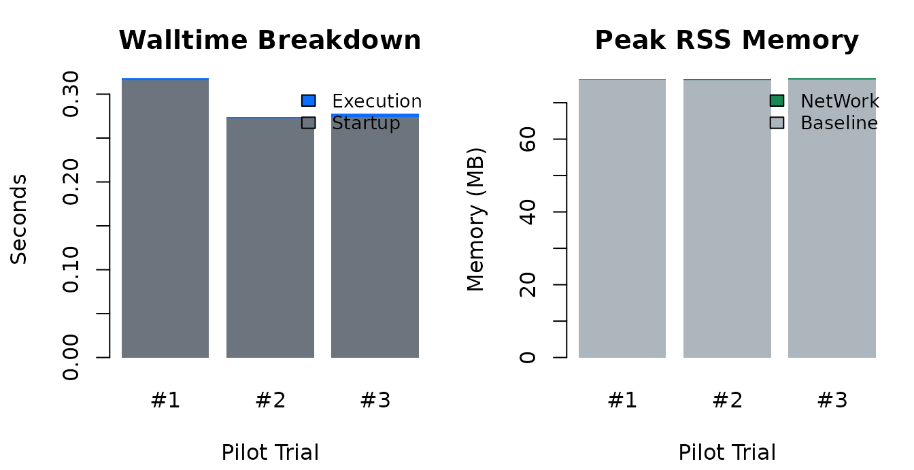

From Micro-Pilot Profiling to Load-Balanced SLURM Arrays
Source:vignettes/pilot-to-cluster.Rmd
pilot-to-cluster.RmdOverview
Real statistical computing jobs rarely have uniform, symmetric
runtimes. Parameter grids often sweep sample sizes from small to large,
and iterative estimators (MCMC, mixed models, optimization) produce
strongly right-skewed runtime tails. This vignette covers three pillars
of accurate HPC sizing in slurmpilot:
- Empirical OS-level RSS and runtime profiling with
pilot_run(). - Tail-safe walltime scaling for skewed/heavy-tailed workloads in
estimate_resources(). - Heterogeneous chunk load balancing (
contiguous,round_robin, and Longest Processing Time firstlpt) plus pre-submit closure auditing withinspect_job_globals().
1. Empirical Micro-Pilot Profiling
pilot_run() runs sample replications in isolated
background child processes (isolate = TRUE) while polling
OS process-tree RSS via ps. Using
sample_method = "stratified" samples evenly across an
ordered parameter grid so both inexpensive and expensive cells are
profiled:
library(slurmpilot)
grid <- lapply(seq_len(12L), function(i) {
list(task_id = i, n = 100L + 50L * i, reps = 30L)
})
sim_worker <- function(cfg) {
vals <- replicate(cfg$reps, mean(stats::rnorm(cfg$n)))
data.frame(task_id = cfg$task_id, n = cfg$n, est_se = stats::sd(vals))
}
pilot <- pilot_run(
fun = sim_worker,
args_list = grid,
n_pilot = 3L,
sample_method = "stratified",
seed = 101L
)
print(pilot)
#>
#> ── slurmpilot Micro-Pilot Profile
#> • Trials: 3/3 succeeded (isolated=TRUE, cpus=1)
#> • Task exec time: median 0.002s, p90 0.004s, max 0.004s
#> • Worker startup: median 0.274s
#> • Memory (RSS): baseline 76.3 MB, peak max 76.7 MB, net max 0.4 MB
summary(pilot)
#> # A tibble: 13 × 2
#> metric value
#> <chr> <dbl>
#> 1 n_trials 3
#> 2 n_ok 3
#> 3 n_failed 0
#> 4 startup_median_sec 0.274
#> 5 exec_mean_sec 0.00267
#> 6 exec_sd_sec 0.00115
#> 7 exec_q50_sec 0.00200
#> 8 exec_q90_sec 0.00360
#> 9 exec_q95_sec 0.00380
#> 10 exec_max_sec 0.00400
#> 11 baseline_rss_median_mb 76.3
#> 12 peak_rss_max_mb 76.7
#> 13 net_rss_max_mb 0.379
plot(pilot, engine = "base")
2. Heavy-Tailed & Skewed Runtime Scaling
When pilot runtimes exhibit right skew (for instance, an MCMC chain
or optimizer where 4 trials take ~1 second and 1 trial takes 40
seconds), a naive normal Central Limit Theorem (CLT) bound
underestimates upper-tail chunk walltime.
estimate_resources() evaluates a robust three-model
envelope:
combining normal CLT, a Fenton-Wilkinson log-normal sum
approximation, and a nonparametric order-statistic bound. Here we
demonstrate how the scaling model detects heavy tails and protects
--time automatically:
skew_trials <- tibble::tibble(
trial_id = 1:5,
task_index = 1:5,
status = rep("OK", 5),
wall_sec = c(3.0, 3.2, 3.1, 3.3, 42.0),
startup_sec = rep(2.0, 5),
exec_sec = c(1.0, 1.2, 1.1, 1.3, 40.0),
baseline_rss_mb = rep(110, 5),
peak_rss_mb = c(240, 260, 255, 270, 390),
net_rss_mb = c(130, 150, 145, 160, 280),
cpu_user_sec = c(1.0, 1.2, 1.1, 1.3, 39.5),
cpu_sys_sec = rep(0.1, 5),
n_samples = rep(12L, 5),
result_size_bytes = rep(1024, 5),
error = rep(NA_character_, 5)
)
skew_pilot <- structure(
list(
trials = skew_trials,
summary = list(
n_trials = 5L, n_ok = 5L, n_failed = 0L, n_timeout = 0L, n_oom_suspect = 0L,
failure_rate = 0, exec_mean_sec = mean(skew_trials$exec_sec),
exec_sd_sec = stats::sd(skew_trials$exec_sec),
exec_q50_sec = stats::median(skew_trials$exec_sec),
exec_q90_sec = stats::quantile(skew_trials$exec_sec, 0.90, names = FALSE),
startup_median_sec = 2.0, baseline_rss_median_mb = 110,
peak_rss_max_mb = 390, net_rss_max_mb = 280
),
meta = list(n_pilot = 5L, n_total_hint = 100L, cpus_per_task = 1L, isolate = TRUE)
),
class = "slurmpilot_pilot"
)
res_skew <- estimate_resources(
skew_pilot,
n_tasks = 100L,
max_chunk_size = 5L,
partition = "general"
)
print(res_skew)
#>
#> ── slurmpilot SLURM Resource Plan
#> • Workload: 100 tasks -> 20 array chunks (5 tasks/chunk)
#> • SLURM flags: --array=1-20 --cpus-per-task=1 --mem=768M --time=00:30:00
#> --partition=general
#> ℹ Predicted chunk walltime: 1002.0s (expected 46.6s, startup overhead 4.3%)
#> ℹ Predicted peak RSS: 435.3 MB -> requested 768M
#> ℹ Estimated total compute: 0.26 CPU-hours
res_skew$estimates[c("dominant_model", "is_heavy_tailed", "pred_clt_sec", "pred_lognormal_sec", "pred_nonparametric_sec")]
#> $dominant_model
#> [1] "lognormal"
#>
#> $is_heavy_tailed
#> [1] TRUE
#>
#> $pred_clt_sec
#> [1] 182.5778
#>
#> $pred_lognormal_sec
#> [1] 1002
#>
#> $pred_nonparametric_sec
#> [1] 163.33. Heterogeneous Load Balancing: Contiguous vs Round-Robin vs LPT
When tasks vary widely in cost (for example, sample sizes or MCMC chain lengths spanning an order of magnitude), contiguous slicing packs all expensive tasks into the final chunk, creating a single straggler that stalls the array job.
Compare plan_chunks() across "contiguous",
"round_robin", and "lpt" (Longest Processing
Time first greedy makespan minimization):
task_costs <- c(10, 12, 15, 20, 25, 30, 50, 60, 80, 95, 110, 130)
p_contig <- plan_chunks(length(task_costs), chunk_size = 3L, strategy = "contiguous", task_weights = task_costs)
p_rr <- plan_chunks(length(task_costs), chunk_size = 3L, strategy = "round_robin", task_weights = task_costs)
p_lpt <- plan_chunks(length(task_costs), chunk_size = 3L, strategy = "lpt", task_weights = task_costs)
comparison <- data.frame(
strategy = c("contiguous", "round_robin", "lpt"),
max_chunk_cost = c(
max(p_contig$estimated_weight),
max(p_rr$estimated_weight),
max(p_lpt$estimated_weight)
),
imbalance_ratio = round(c(
max(p_contig$estimated_weight) / mean(p_contig$estimated_weight),
max(p_rr$estimated_weight) / mean(p_rr$estimated_weight),
max(p_lpt$estimated_weight) / mean(p_lpt$estimated_weight)
), 3)
)
print(comparison)
#> strategy max_chunk_cost imbalance_ratio
#> 1 contiguous 335 2.104
#> 2 round_robin 210 1.319
#> 3 lpt 165 1.036Execute an LPT-balanced array job locally and verify that
slurm_collect() automatically restores exact
1..N task ordering regardless of chunk assignment:
tmp_root <- tempfile("sp_lpt_")
be <- mock_slurm_backend(root_dir = tmp_root, max_workers = 2L)
res_lpt <- resource_spec(
n_tasks = length(grid),
chunk_size = 3L,
mem_mb = 512L,
time_minutes = 5,
strategy = "lpt",
task_weights = task_costs
)
job <- slurm_submit(be, sim_worker, grid, resources = res_lpt, name = "lpt_sim", seed = 77L)
st <- slurm_wait(job, timeout = 30, poll_interval = 0.05)
out <- slurm_collect(job, simplify = TRUE)
stopifnot(identical(out$task_id, seq_len(length(grid))))
head(out)
#> # A tibble: 6 × 3
#> task_id n est_se
#> <int> <int> <dbl>
#> 1 1 150 0.0913
#> 2 2 200 0.0676
#> 3 3 250 0.0613
#> 4 4 300 0.0591
#> 5 5 350 0.0491
#> 6 6 400 0.0470
unlink(tmp_root, recursive = TRUE)4. Pre-Submit Closure & Bundle Diagnostics
Functions created inside another R function inherit that parent frame
as their lexical closure. If a large raw data frame lives in that frame,
saveRDS(fun) silently bundles it into every SLURM worker’s
payload.rds. Use inspect_job_globals() to
catch accidental closure captures and unresolved free variables before
staging:
build_leaky_worker <- function() {
accidental_blob <- numeric(5e5)
function(x) x + missing_scalar
}
report <- inspect_job_globals(
fun = build_leaky_worker(),
args_list = as.list(1:5),
size_warn_mb = 2
)
print(report)
#>
#> ── slurmpilot Pre-Submit Globals & Bundle Audit [2 warning(s)]
#> • Estimated payload size: 3.82 MB (closure=3.81 MB, globals=0.00 MB, args=0.00
#> MB)
#> • Captured local closure objects: 1 | Explicit globals: 0
#> • Unresolved variables: 1 | Unexported functions: 0
#> ! Worker closure captures large local object(s) >= 2.0 MB: accidental_blob (3.8
#> MB). Consider setting environment(fun) <- globalenv() and passing only
#> required objects via globals.
#> ! Unresolved free variable(s) referenced in fun: missing_scalar. Pass them
#> explicitly via globals = list(...).